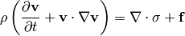
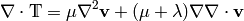
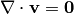
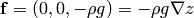
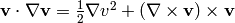
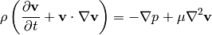
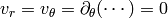
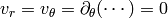
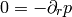
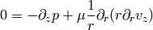

Fluid Dynamics¶
Stress-Energy Tensor¶
In general, the stress energy tensor is the flux of momentum  over the
surface
over the
surface  . The Navier-Stokes equations can be derived from the
conservation law:
. The Navier-Stokes equations can be derived from the
conservation law:

Navier-Stokes Equations¶
When we write the above conservation law in a nonrelativistic limit, we get the Cauchy momentum equation:

where the stress tensor  can be written as:
can be written as:

and we get the Navier-Stokes equations:

Those are the most general equations. If we assume some more things about the fluid, they can be further simplified.
For Newtonean fluids, we want  to be isotropic, linear in strain
rates and it’s divergence zero for fluid at rest. It follows that the only way
to write the tensor under these conditions is:
to be isotropic, linear in strain
rates and it’s divergence zero for fluid at rest. It follows that the only way
to write the tensor under these conditions is:

where the strain rate is:

The divergence of the tensor is:

or in vector form:

For incompressible fluid we have , so we get:

and for a perfect fluid we have no viscosity, e.g.  , so:
, so:

and the equations are then called Euler equations (for perfect fluid).
Bernoulli’s Principle¶
Bernoulli’s principle works for a perfect fluid, so we take the Euler equations:

and put it into a vertical gravitational field , so:

we divide by  :
:

and use the identity :

so:

If the fluid is moving, we integrate this along a streamline from the point  to
to  :
:
![\int {\partial {\bf v}\over\partial t} \cdot \d {\bf l} +\left[{v^2\over 2} + gz + {p\over\rho} \right]_A^B=0](../../images/math/ed384b2c8b9985d9a9b74c872174d0f686c19b7f.png)
So far we didn’t do any approximation (besides having a perfect fluid in a
vertical gravitation field).
Now we assume a steady flow, so  and since points and are arbitrary, we get:
and since points and are arbitrary, we get:

along the streamline. This is called the Bernoulli’s principle.
If the fluid is not moving, we set  in the equations above and
immediately get:
in the equations above and
immediately get:
Hydrostatic Pressure¶
Let  be the pressure on the water surface and
be the pressure on the water surface and  the pressure
the pressure  meters below the surface. From the Bernoulli’s principle:
meters below the surface. From the Bernoulli’s principle:

so

and we can see, that the pressure meters below the surface is  plus the (atmospheric) pressure on the surface.
plus the (atmospheric) pressure on the surface.
Torricelli’s Law¶
We want to find the speed  of the water flowing out of the tank (of the
height ) through a small hole at the bottom. The (atmospheric) pressure at
the water surface and also near the small hole is . From the Bernoulli’s
principle:
of the water flowing out of the tank (of the
height ) through a small hole at the bottom. The (atmospheric) pressure at
the water surface and also near the small hole is . From the Bernoulli’s
principle:

so:

This is called the Torricelli’s law.
Venturi Effect¶
A pipe with a cross section  , pressure and the speed of a
perfect liquid
, pressure and the speed of a
perfect liquid  changes it’s cross section to
changes it’s cross section to  , so the pressure
changes to and the speed to
, so the pressure
changes to and the speed to  . Given
. Given  , and
, calculate and .
, and
, calculate and .
We use the continuity equation:

and the Bernoulli’s principle:

so we have two equations for two unknowns and , after solving it we
get:


Hagen-Poiseuille Law¶
We assume incompressible (but viscuous) Newtonean fluid (in no external force field):

flowing in the vertical pipe of radius  and we further assume steady flow
and we further assume steady flow
 , axis symmetry
 and a fully developed flow
, axis symmetry
 and a fully developed flow  . We write the Navier-Stokes equations above in the cylindrical
coordinates and using the stated assumptions, the only nonzero equations are:
. We write the Navier-Stokes equations above in the cylindrical
coordinates and using the stated assumptions, the only nonzero equations are:


from the first one we can see the  is a function of
is a function of  only and we can
solve the second one for
only and we can
solve the second one for  :
:

We want  to be finite, so
to be finite, so  , next we assume the no slip
boundary conditions
, next we assume the no slip
boundary conditions  , so
, so  and we get the parabolic velocity profile:
and we get the parabolic velocity profile:

Assuming that the pressure decreases linearly across the length of the pipe, we
have  and we get:
and we get:

We can now calculate the volumetric flow rate:


so we can see that it depends on the 4th power of . This is called the
Hagen-Poiseuille law.